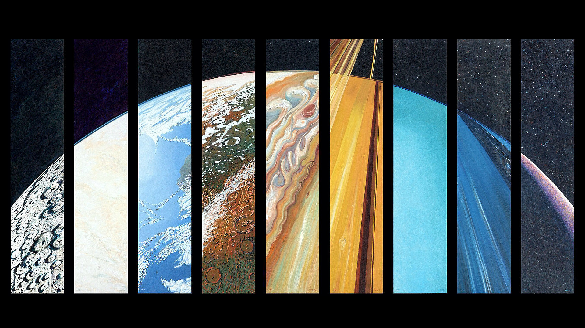
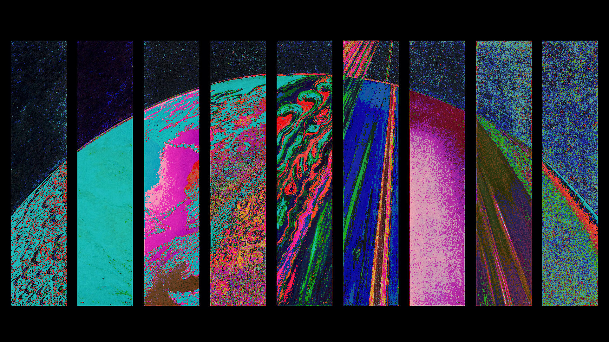
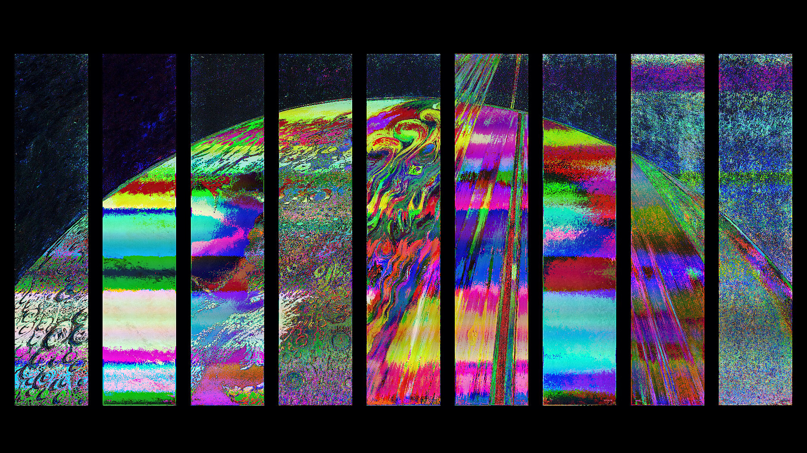
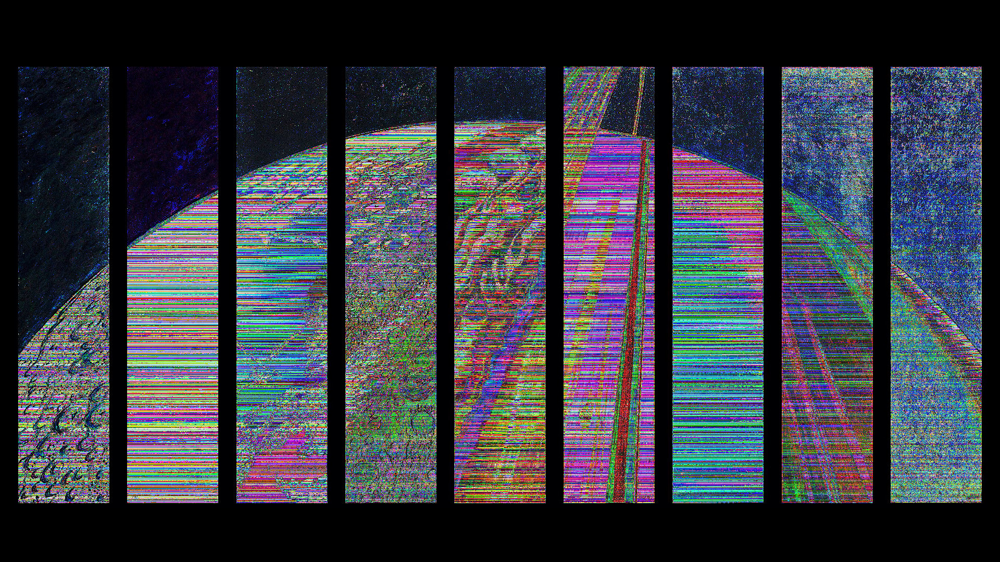
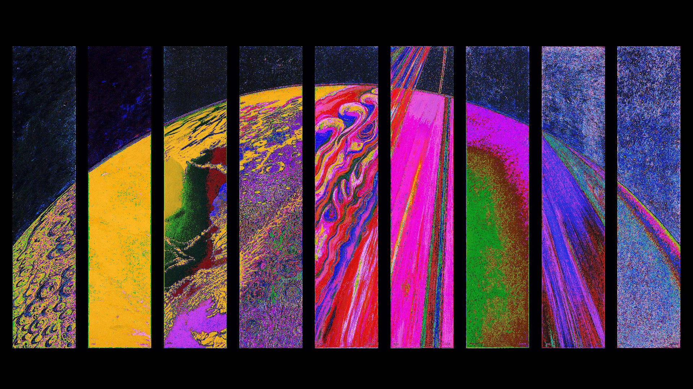
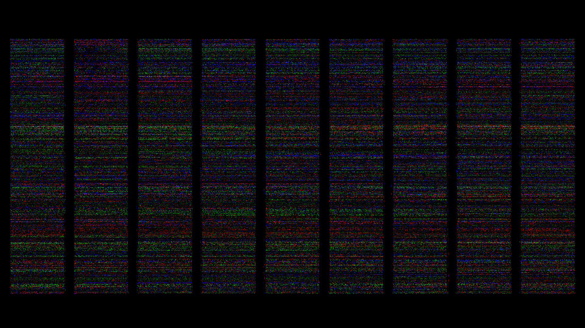

Noisy
October 31st, 2018
Noisy is a program that warps images based on noise and average color. This is part of a set of programs in the Generative Art collection that focuses on image distortion to create unique effects.
Say you have an image, like this image:

It's a very pretty image. But the objective of this program is to turn it into something like...

The intention of doing this was to learn how to access and modify the Pixel array of P5JS for its canvas display. I got the idea by watching some of the intro image processing videos on Dan Shiffman's Youtube channel
The Pixel array was indubitably a series of mental gymnastics to figure out (at the time). As a 4 deep 1D array (in the order of R(ed) G(reen) B(lue) A(lpha) R ...), there was a need to parse the index appropriately in order to access the right pixel.
The following code appropriately sums up the Pixel access:
where canvas is the entire 1D array [4 * width * density * height * density] (density^2 is for high density displays, but is usually 1), and blockIdx is the index of the current section. The program doesn't access the inner loop unless a certain modded index is hit; changing this parameter adjusts to what extent that the new color is static for a block of pixels. Making the blockIdx volatile (in the current program, incrementable when the program goes into the inner loop) adds some variability to this process, which is good.
The sectionSize, however, is what really drives how the image is adjusted and changed. Changing the sectionSize changes the range to which the blockIdx is limited to, and directly changes at what pixel does the color reset upon.
Some observations of sectionSize: * odd numbers above 1000 create a shimmering oil effect with large color strips * smaller odd numbers also create strips of color, but much thinner, creating an effect like static warping on an old TV screen. * even numbers provide a lot more grainy detail and texture, which follow along with features in the image
p4" /> p" /> 
One of the things to notice is that after the program iterates after a couple frames, the image tends to start noising over into static, although as the color flickers the general outline is still semi-visible. This leads to less interesting results, so it's recommended that the number of iterations is kept low (like, less than 15) or under strict control.

Here's the Codepen with an example image (that you can replace) set up. Click on it to stop/start the iterating.
See the Pen noisy by Matthew Yu (@dimembermatt) on CodePen.
And the following is a gallery of images I've modified using this program.